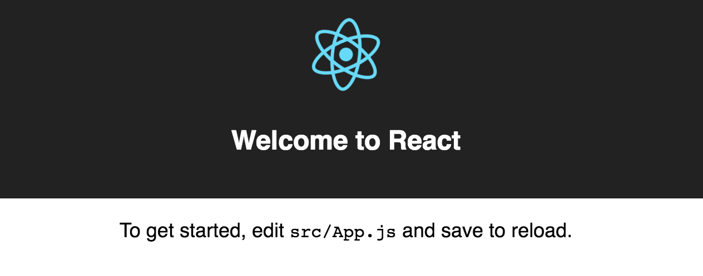

Diego Acuña Rozas
Ing. Civil en Informática - UTFSM
diego.acuna@mailbox.org
Seguimos con el Frontend:
En la clase anterior, estuvimos trabajando con AngularJS el cual provee de un framework con muchas herramientas para desarrollar aplicaciones web modernas y en particular Single-Page Apps.
En esta clase, estudiaremos la librería llamada ReactJS
Comencemos entendiendo qué es y para qué sirve esta librería.
La filosofía de React se basa en componentes modulares y reutilizables.
React y Angular tienen enfoques distintos. Sabemos que Angular es más un "framework" que una librería. Entonces:
Para aprender ReactJS lo mejor es utilizarlo. Para ahorrar trabajo utilizaremos (como de costumbre) un generador (directo desde Facebook):
npm install -g create-react-app
Este generador permite crear una Single-Page App con React ahorrándonos la configuración de todas las librerías por separado. Para crear una aplicación:
create-react-app blog-frontend
cd blog-frontend
Veamos la estructura que nos genera...
El generador nos crea la siguiente estructura de directorios:
blog-frontend/
README.md
node_modules/
package.json
public/
index.html
favicon.ico
src/
App.css
App.js
App.test.js
index.css
index.js
logo.svg
public/index.html es nuestra vista de entrada y src/index.js nuestro script de entrada en la aplicación.
Veamos como se ve nuestra aplicación. Para iniciar el servidor de node debemos ejecutar:
npm start
Lo que iniciará el servidor en el puerto 3000 por defecto:
Recordemos que ReactJS solo es la "V" en MVC, veamos cual es el stack de tecnologías que nuestro generador configuró para nosostros:
Javascript no es un lenguaje compilador. ¿Para qué necesitamos Babel? La respuesta: EcmaScript 6.
Javascript se rige por un estándar denominado EcmaScript. La última versión de este estándar corresponde a ES6 la cual agrega una gran cantidad de mejoras al lenguaje:
var data = [1, 2, 3, 4, 5];
data.forEach(function(elem){
console.log(elem)
});
var data = [1, 2, 3, 4, 5];
data.forEach(elem => {
console.log(elem);
});
function Person(name, lastname) {
this.firstName = name;
this.lastName = lastname;
};
Person.prototype.sayName = function(){
return this.firstName+ " " + this.lastName;
};
var yo = new Person("Diego", "Acuña");
yo.sayName();
class Person {
constructor(firstName, lastName) {
this.firstName = firstName;
this.lastName = lastName;
}
sayName() {
return this.firstName + " " + this.lastName;
}
}
var yo = new Person("Diego", "Acuña");
yo.sayName();
//archivo1.js
...
//archivo2.js (hace uso de funciones en archivo1.js)
//index.html
<script src="archivo1.js"></script>
<script src="archivo2.js"></script>
//archivo: lib/person.js
module "person" {
export function hello(nombre) {
return nombre;
}
}
//archivo: app.js
import { hello } from "person";
var app = {
foo: function() {
hello("Carlos");
}
}
export app;
Existen muchas otras novedades en ES6 pero solo están disponibles en los navegadores que implementen el estándar (que es relativamente nuevo = mediados del 2015)...
Babel nos permitirá usar ES6 en navegadores que aún no lo soporta. Por eso es un compilador.
NOTA: Cuando hablabamos de módulos en webpack nos referíamos a los módulos que podemos construir con ES6.Por defecto, no disponemos de una librería para hacer peticiones ajax. ES6 dispone de nuevas funciones para hacer peticiones de manera sencilla sin la necesidad de dependencias adicionales. Para esto se utiliza la función fetch:
fetch('http://localhost:3001/posts')
.then((response) => {
return response.json()
})
.then((data) => {
console.log(data)
});
Veamos si funciona. Primero ejecutamos nuestra api rails del blog (ojo que en el puerto 3001 ya que el puerto 3000 está ocupado por la aplicación React).
rails server -p 3001
y ahora podemos ejecutar el código javascript. Por ejemplo, para una prueba rápida pueden pegar el código en la consola del google chrome:
A lo que les responde:
Perfecto! ya podemos hacer llamadas a nuestra API utilizando fetch de manera elegante y sencilla. Veamos como podemos desplegar los posts del blog en la página inicial y así aprendemos más de ReactJS. Veamos primero el archivo index.js:
import React from 'react';
import ReactDOM from 'react-dom';
import App from './App';
import './index.css';
ReactDOM.render(
<App />,
document.getElementById('root')
);
Lo que hace este código es importar un componente React llamado App y lo renderiza en el elemento de id root en nuestra vista principal (index.html). Veamos el index.html para ver la vista principal:
<!doctype html>
<html lang="en">
<head>
<meta charset="utf-8">
<meta name="viewport" content="width=device-width, initial-scale=1">
<link rel="shortcut icon" href="%PUBLIC_URL%/favicon.ico">
<title>React App</title>
</head>
<body>
<div id="root"></div>
</body>
</html>
Es como una vista Single-Page App estándar (similar a las de AngularJS). El elemento con id=root es el div dentro del body. Allí se renderiza el componente App. Veamos ahora el componente App...
Nuestro componente App consiste en:
import React, { Component } from 'react';
import logo from './logo.svg';
import './App.css';
class App extends Component {
render() {
return (
<div className="App">
<div className="App-header">
<img src={logo} className="App-logo" alt="logo" />
<h2>Welcome to React</h2>
</div>
<p className="App-intro">
To get started, edit <code>src/App.js</code> and save to reload.
</p>
</div>
);
}
}
export default App;
Esta es efectivamente la interfaz gráfica que vemos al iniciar nuestra aplicación. Hagamos algunas modificaciones...
Ya mencionamos anteriormente que la filosofía de React se basa en la reutilización de componentes. Vamos a agregar bootstrap para el diseño de nuestra app. Para esto utilizaremos react-bootstrap la cual es una librería con componentes React basados en bootstrap:
npm install react-bootstrap --save
npm install bootstrap@3 --save
y ahora lo importamos en nuestro archivo src/index.js:
import 'bootstrap/dist/css/bootstrap.css';
import 'bootstrap/dist/css/bootstrap-theme.css';
Ahora tenemos componentes como Button, Navbar, etc. disponibles en nuestros propios componentes de React. Mejoremos el App...
La modificación quedaría:
import React, { Component } from 'react';
import { Grid, Row, Col, Navbar, Jumbotron, Button } from 'react-bootstrap';
class App extends Component {
render() {
return (
<Grid>
<Row>
<Col lg={12}>
<Jumbotron className="text-center">
<Grid>
<h1>Nuestro Blog</h1>
<p>
Blog con Frontend en React (V) y backend en Rails
</p>
</Grid>
</Jumbotron>
</Col>
</Row>
</Grid>
);
}
}
export default App;
Utilizamos los componentes de react-bootstrap como Grid, Row, Col, Jumbotron, etc.. Para más información ver la documentación de react-bootstrap.. Veamos como se ve...
OK! hasta ahora vamos bien. El paso siguiente es listar los posts. Para esto vamos a crear un componente que se encargue de esto. Recordar: React es acerca de componentes y reutilización. Debemos hacer nuestros componentes lo más especialidados posible.
Notaron que la sintaxis de las vistas no es realmente html (por ejemplo en html no existe la etiqueta Jumbotron). Para la sintaxis de las plantillas en React se utiliza un lenguaje llamado JSX.
En resumen, JSX permite trabajar de manera más simple con las estructuras de los componentes de React. Tiene una sintaxis legible y fácil de entender para desarrolladores no tan técnicos. Para más información ver:
JSX in depthVamos a crear un componente para listar los post en nuestra página de inicio. Nuevamente recordando que los componentes deben ser simples y cumplir tareas especificas, tendremos lo siguiente en mente:
Veamos como sería el primer componente que vamos a crear:
import React, { Component } from 'react';
import { Row, Col } from 'react-bootstrap';
import Holder from 'react-holder';
class PostList extends Component {
render() {
return (
<Row>
<Col lg={12}>
{this.props.posts.map(this.createPostItem)}
</Col>
</Row>
);
}
createPostItem(post) {
return (
<div className="media" key={post.id}>
<div className="media-left">
<a href="#">
<Holder className="media-object"/>
</a>
</div>
<div className="media-body">
<h4 className="media-heading">
<a>{post.title}</a>
</h4>
<small>Por: {post.autor}, <i><span>{post.created_at}</span></i></small>
<p className="post-content">
{post.content}
</p>
<p>
Comentarios ({post.comments.length}) |
Última actualización: <span>{post.updated_at}</span>
</p>
</div>
</div>
);
}
}
export default PostList;
Veamos de que se trata el this.props...
Hay dos conceptos importantes que manejar con respecto a los datos de un componente:
Veamos ahora como sería el container de nuestro componente PostList.
import React, { Component } from 'react';
import PostList from './PostList';
class PostListContainer extends Component {
constructor(props) {
super(props);
this.state = {
posts: []
}
}
render() {
return (
<PostList posts={this.state.posts} />
);
}
componentDidMount() {
var _this = this;
fetch('http://localhost:3001/posts').then((response) => {
return response.json()
}).then((data) => {
_this.setState({posts: data})
});
}
}
export default PostListContainer;
El método componentDidMount se ejecuta luego de que el componente es inicializado, allí hacemos la llamada a nuestra API. Ahora usemos este componente en nuestra App...
El código de nuestro App.js quedaría:
import React, { Component } from 'react';
import { Grid, Row, Col, Jumbotron } from 'react-bootstrap';
import PostListContainer from './PostListContainer';
class App extends Component {
render() {
return (
<Grid>
<Row>
<Col lg={12}>
<Jumbotron className="text-center">
<Grid>
<h1>Nuestro Blog</h1>
<p>
Blog con Frontend en React (V) y backend en Rails
</p>
</Grid>
</Jumbotron>
</Col>
</Row>
<PostListContainer />
</Grid>
);
}
}
export default App;
Veamos como se ve nuestra vista...
Nuestra vista se ve:
Ahora veamos como crear una vista para mostrar un post. Para esto necesitamos saber como realizar routing en nuestra aplicación. Para esto, utilizaremos la librería React-Router.
Para instalarlo:
npm install --save react-router
Antes de continuar con el routing, vamos a construir el componente para mostrar un post. Utilizaremos la misma plantilla que creamos en nuestra app Angular. Veamos como sería el componente:
import React, { Component } from 'react';
import { Grid, Row, Col, Jumbotron } from 'react-bootstrap';
class Post extends Component {
constructor(props) {
super(props);
this.state = {
post: {}
}
}
componentDidMount() {
var _this = this;
fetch('http://localhost:3001/posts/'+this.props.params.postId).then((response) => {
return response.json()
}).then((data) => {
_this.setState({post: data})
});
}
render() {
var post = this.state.post;
return (
<Grid>
<Row>
<Col lg={12}>
<Jumbotron className="text-center">
<Grid>
<h1>Nuestro Blog</h1>
<p>
Blog con Frontend en React (V) y backend en Rails
</p>
</Grid>
</Jumbotron>
</Col>
</Row>
<Row>
<Col lg={8}>
<h1>{post.title}</h1>
<p>Por: {post.autor}, <i>{post.created_at}</i></p>
<p style={{'fontSize': '15px'}}>
{post.content}
</p>
</Col>
<Col lg={4}>
<aside style={{'marginTop': '30px'}}>
<p>
Actualizado: {post.updated_at}
</p>
</aside>
</Col>
</Row>
</Grid>
);
}
}
export default Post;
Para utilizar nuestra librería de routing, debemos configurarla en nuestro archivo src/index.js:
import React from 'react';
import ReactDOM from 'react-dom';
import App from './App';
import Post from './Post';
import { Router, Route, browserHistory } from 'react-router'
import 'bootstrap/dist/css/bootstrap.css';
import 'bootstrap/dist/css/bootstrap-theme.css';
import './index.css';
ReactDOM.render(
(
<Router history={browserHistory}>
<Route path="/" component={App}/>
<Route path="/post/:postId" component={Post}/>
</Router>
), document.getElementById('root')
);
Como se ve en el código, el routing lo configuramos ruta por ruta asignando que componente se desplegará en dicha ruta.
Podemos definir parámetros en nuestras rutas (como se vió anteriormente). El parámetro real de se puede obtener mediante la propiedad params del componente asignado a la ruta.
Un ejemplo de lo anterior, en nuestro componente Post utilizamos:
componentDidMount() {
var _this = this;
fetch('http://localhost:3001/posts/'+this.props.params.postId).then((response) => {
return response.json()
}).then((data) => {
_this.setState({post: data})
});
}
El this.props.params.postId proviene de la ruta configurada en el Routing.
Ya tenemos todo configurado. Veamos como se despliega la vista de ver un Post:
Excelente! ya hemos listado y mostrado un post.
Con lo mencionado en esta clase y con la ayuda de google intenten desarrollar las siguientes tareas: